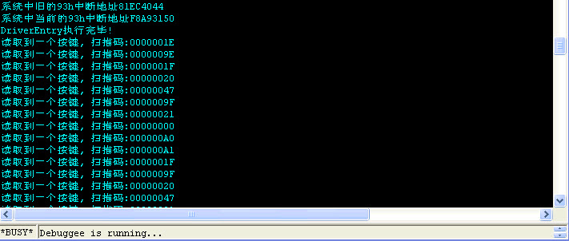

键盘过滤二(接管93h中断)
文章目录
这两天确实有些纠结啊, 理想很丰满, 现实很骨感.. 上一篇已经把键盘过滤写完, 用的是挂一个设备到KbdClass类驱动的设备上面.这是很正统的做法, 不是很难就可以把这个问题解决. 再后面两个一个是搜索KbdClass驱动的分发函数进行Hook还有一个搜索端口驱动回调KbdClass的一个回调函数的地址. 这两个办法都遇到问题.. 还有这个替换93号中断也遇到问题..
首先来说, Hook KbdClass的分发函数这个倒是很简单, 但是Hook以后就遇到一个问题, 因为KbdClass的分发函数被调用的时候是还没有被完成的, 所以在过滤设备的时候我们搞的是一个完成函数, 但是我们如果Hook KbdClass以后设置一个完成例程是不会被调用的, 我跟了下KbdClass驱动自己内部的反汇编代码, 原来它自己内部也设置了一个完成函数, 我倒..
于是我想到了另外一个办法, 就是让KbdClass原来的分发函数执行完了以后再执行我们的函数, 但是这样又遇到一个问题, 因为KbdClass内部会将Irp下发, 或者Peeding. 反正处理KbdClass内部就没法再处理了.. 我倒. 没法解决, 寒江独钓里面也就给了个Hook分发函数的代码, 根本就起不到什么作用.
还有一个问题就是关于搜索KbdClass在端口驱动中的回调函数地址, 按照寒江独钓里面的代码实现了下, 发现根本就搜索不到这个函数地址, 或者是我代码写错了? 就是是写准确了, 这个回调函数的原型是什么, 又是一个纠结的问题. 我倒. 寒江独钓啊…真是让人纠结的一本书.
就这两个问题我专门发邮件给寒江独钓的作者谭文, 得到的解答居然是完全没有看我的问题, 只是敷衍了下, 一点营养都没有.. 谭文是这样回的邮件:
你好！
你的研究很有意思，也很深入。但是我不得不提醒你，你恐怕得独立研究。我不愿意也没有时间去看你的代码，因为我和你一样，我也有许多工作要做，而且和你的工作没有任何丝毫关联。我相信别人也和你我一样。祝你好运。
我倒. 高手都很忙啊!算了, 先放放吧, 于是我前进, 接着敲这个接管93h中断的例子, 这个接管中断倒不是很难, 不过我想写的更进一步,就是实现和R3的通信, 所以还是和上一篇那个套路, R3的读取请求进入R0以后就先挂起来, 然后在R0这边接管了93h中断, 如果有按键消息那么就会进入我们设置的中断例程执行, 问题就在这里, 在我们的中断例程里面我们将键盘读取处理, 并且拿到了这个扫描码, 这时候按说是完成R3的读取请求, 如果是这样那么一切就完美了, 但是在中断例程中是不允许调用KeSetEvent函数的, 因为中断级太高了. 如果单纯的用DbgPrint打印一下当然很舒服了. 但是要完成R3的读取请求那就比较麻烦了..
这时候我想到了DPC例程, 但是使用Dpc例程还是有问题, 我倒, 伤不起啊!因为键盘按下一个键是产生两个扫描码, 也就是说我们的中断例程会迅速被执行两次, 这时候Dpc例程很快就插入了两个, 然后中断例程执行完了以后退回来接着执行Dpc例程, Dpc例程里面结构以非常快的速度调用了KeSetEvent两次, 结果还是蓝屏. 我倒.
不熟练啊, 看来Windows内核的讨论掌握的还是不够多啊!革命尚未成功, 还需要努力啊, 这边也算把接管中断这个写完了. 就是简单的DbgPrint打印了下, 先就这样吧!
不过说回来, 我觉得这个接管中断还是没有意义, 现在的电脑一般都开始使用USB设备了, 这个中断很明显只能够适用于PS/2的键盘, 所以就当练练接管中断吧!

这边是代码非常简单了, 只是接管了个中断, 连设备都没有创建:
/* Windows 内核下键盘过滤设备的简单演示, 接管93h中断 驱动层代码 编译方法参见makefile. TAB = 8 */ #include <ntddk.h> #include <windef.h> #include “IdtKeyBoard.h”
//=========================================================================== //打开写保护 CR0 Bit16 WP = 1 禁止0环程序乱写乱画 //=========================================================================== VOID WriteProteOpen() { __asm { cli mov eax, cr0 and eax, not 10000h mov cr0, eax } } //=========================================================================== //关闭写保护 CR0 bit16 WP = 0 开启0环程序乱写乱画 //=========================================================================== VOID WriteProteClose() { __asm { mov eax, cr0 or eax, 10000h mov cr0, eax sti } } //=========================================================================== //等待键盘直到可读 //=========================================================================== ULONG WaitForKbRead() { ULONG i = 100; BYTE byChar;
do {
\_asm {
in al, 0x64
mov byChar, al
}
KeStallExecutionProcessor( 50 );
if( !( byChar & OBUFFER\_FULL ) ) {
break;
}
} while ( i-- );
if( i ) return TRUE;
return FALSE;
} //=========================================================================== //等待键盘直到可写 //=========================================================================== ULONG WaitForKbWrite() { ULONG i = 100; BYTE byChar;
do {
\_asm {
in al, 0x64
mov byChar, al
}
KeStallExecutionProcessor( 50 );
if( !( byChar & IBUFFER\_FULL ) ) {
break;
}
} while ( i-- );
if( i ) return TRUE;
return FALSE;
} //=========================================================================== // 首先读端口获得按键扫描码打印出来。然后将这个扫描码写回端口, 以便别的应用 //程序能正确接收到按键, 如果不想让别的程序截获按键，可以写回一个任意的数据. //=========================================================================== VOID NewInterruptFilter() { BYTE byKey; static BYTE byBeforKey = 0;
PAGED\_CODE\_LOCKED();
//————————————————————————— WaitForKbRead(); _asm { in al, 0x60 mov byKey, al }
KdPrint( ( "读取到一个按键, 扫描码:%p\\n", byKey ) );
//————————————————————————— // 把数据写回端口，以便让别的程序可以正确读取. if( byBeforKey != byKey ) {
byBeforKey = byKey;
\_asm {
mov al, 0xd2
out 0x64, al
}
WaitForKbWrite();
\_asm {
mov al, byKey
out 0x64, al
}
}
} //=========================================================================== // 下面这个函数用sidt指令读出一个P2C_IDTR结构, 并返回IDT的地址 //=========================================================================== VOID* Get93hIdt() { IDTR Idtr;
\_asm Sidt Idtr
return ( void \* )Idtr.Base;
}
//=========================================================================== VOID* g_pOld93InterruptRoutine = NULL; //旧的93h号中断地址 //=========================================================================== //93号中断中继函数 //=========================================================================== __declspec( naked ) New93InterruptProc() {
PAGED\_CODE\_LOCKED();
\_\_asm {
pushad // 保存所有的通用寄存器
pushfd // 保存标志寄存器
call NewInterruptFilter // 调一个我们自己的函数
popfd // 恢复标志寄存器
popad // 恢复通用寄存器
jmp g\_pOld93InterruptRoutine // 跳到原来的中断服务程序
}
} //=========================================================================== //替换93h号中断 //bFlags :是Hook还是UnHook. True为Hook //=========================================================================== NTSTATUS SetNew93Idt( BOOLEAN bFlags ) { KIRQL Irql; PIDT_ENTRY pStOld93Idt = NULL;
//————————————————————————— //获取旧的93号Idt地址 pStOld93Idt = ( ( PIDT_ENTRY )Get93hIdt() ) + 0x93; ASSERT( pStOld93Idt );
KdPrint ( ( "系统中旧的93h中断地址%p\\n",
\_MAKELONG( pStOld93Idt->OffsetLow, pStOld93Idt->OffsetHight ) ) );
//————————————————————————— if( bFlags ) {
g\_pOld93InterruptRoutine = ( void\* )\_MAKELONG(
pStOld93Idt->OffsetLow, pStOld93Idt->OffsetHight );
WriteProteClose(); //关闭写保护
Irql = KeRaiseIrqlToDpcLevel(); //提升IRQL中断级
pStOld93Idt->OffsetLow = LOW16\_OF\_32( &New93InterruptProc );
pStOld93Idt->OffsetHight = HIGH16\_OF\_32( &New93InterruptProc );
KeLowerIrql ( Irql ); //恢复Irql
WriteProteOpen(); //打开写保护
//————————————————————————— } else { WriteProteClose(); //关闭写保护 Irql = KeRaiseIrqlToDpcLevel(); //提升IRQL中断级
pStOld93Idt->OffsetLow = LOW16\_OF\_32( g\_pOld93InterruptRoutine );
pStOld93Idt->OffsetHight = HIGH16\_OF\_32( g\_pOld93InterruptRoutine );
KeLowerIrql ( Irql ); //恢复Irql
WriteProteOpen(); //打开写保护
}
KdPrint ( ( "系统中当前的93h中断地址%p\\n",
\_MAKELONG( pStOld93Idt->OffsetLow, pStOld93Idt->OffsetHight ) ) );
return STATUS\_SUCCESS;
} //=========================================================================== //驱动卸载例程 //=========================================================================== VOID DriverUnLoad( PDRIVER_OBJECT pDriverObj ) {
//恢复旧的中断
if ( g\_pOld93InterruptRoutine ) {
SetNew93Idt( FALSE );
}
} //=========================================================================== //驱动程序入口 //=========================================================================== #pragma code_seg( “INIT” ) NTSTATUS DriverEntry( PDRIVER_OBJECT pDriverObj, PUNICODE_STRING pRegPath ) { NTSTATUS Status;
pDriverObj->DriverUnload = &DriverUnLoad;
//————————————————————————— //替换93h号中断 Status = SetNew93Idt( TRUE ); if ( !NT_SUCCESS( Status ) ) { KdPrint ( ( “替换93号中断失败!\n” ) ); return Status; } //————————————————————————— KdPrint ( ( “DriverEntry执行完毕!\n” ) ); return Status; }
文章作者 忆杰
上次更新 2011-11-27